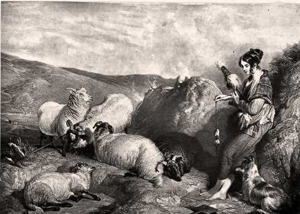
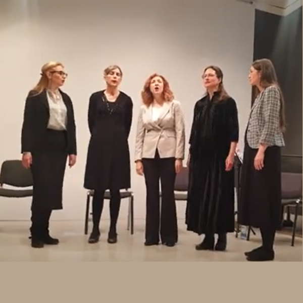
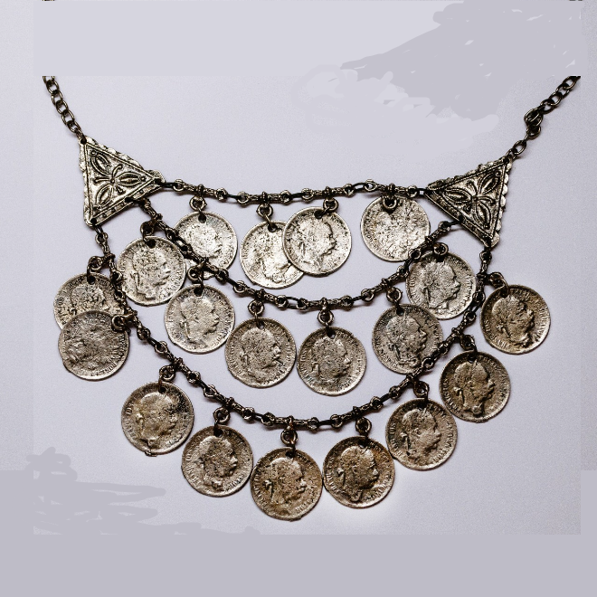

1 Ðека Ñи била данаcке, ЦвеÑо?
Où étais-tu aujourd'hui, Cveta?
(Dvanaesta Rukovet - 12ème guirlande :00:00 - 01:37 )


François-Gabriel Lépaulle (1804-1886): Le harem
|
|
|
|
 Version Mokranjac "Deka si bila danaske Cveto?" (1) & (2) |
 Jovan MiloÅ¡eviÄ peva "Å to gu nema Cveta" Costume serbe avec "Äerdan" (3) |
 Jordan NikoliÄ (1933-2018) peva "Mori Cveto" kao "gradsku" pesmu (4) |
 Ženska pevaÄka grupa âÐоbаâ peva "Mori Cveto" kao "izvornu" pesmu i igru (4) |
 Aleksandar (Aca) DejanoviÄ (1923-2000), iz Vojvodine, peva "Uzmi Stanu" (7) |
 Jordan NikoliÄ (1933-2018) peva "Deka si bila, Stojanke?" (8) |
 Vasilija RadojÄiÄ (1936-2011) peva "Duni mi, duni 'ladane!" (9) |
 Tamburaški Orkestar Banata svira "Neda grivne izgubila" (10) |
Version (3) à 2 voix: Jordan NikoliÄ & DuÅ¡ica BilkiÄ
NOTES
|
[1] ÐÑомена меÑодe ÐÑпиÑиваÑе ÐокÑаÑÑевиһ ÑÑкопиÑа показÑÑе да Ñе пеÑма âÐека Ñи била дaнаÑке, ЦвеÑо?â била пÑедвиÑена да бÑде део 11. âÐ ÑковеÑиâ Ñа поднаÑловом âÐеÑме ca ÐоÑоваâ. Ðоже Ñе запиÑаÑи коÑи га Ñе Ñазлог навео да Ñе ÑÑавÑа као ÑÐ²Ð¾Ð´Ð½Ñ Ð¿ÐµÑÐ¼Ñ Ð½Ð° Ñело 12. Ð ÑковеÑи где Ñе аÑоÑиÑа ca дÑÑгим пеÑмaмa коÑе би, ÑмеÑÑо поднаÑлова âÐеÑме ca ÐоÑоваâ, опÑавдавале ÑиÑyлy âÐеÑме из CÑаÑе СÑбиÑе (ÐоÑовa, ÐÑаÑa) и ÐакедониÑeâ? ÐомпозиÑÐ¾Ñ ÐеÑÐ°Ñ ÐоÑÐ¾Ð²Ð¸Ñ (1883-1970) коÑи Ñе пÑоÑÑавао ÐокÑаÑÑево һоÑÑко ÑÑваÑалаÑÑво (âÐгледи о мÑзиÑи, Ð ÑковедаÑеâ) иÑÑиÑе да од XIIe ÑÑковеÑи Ð¾Ð²Ð°Ñ Ð´Ð°Ñе Ñве веÑи знаÑÐ°Ñ ÑекÑÑовима пеÑама на коÑима Ñади. Ðема виÑе евокаÑиÑа као Ñ 1. Ð ÑковеÑи где Ñе ÑиÑиÑа Ñамо 1. Ñед "ÐаÑко ÑÑнÑе одÑкоÑило". ТекÑÑови пеÑама Ñе ÑепÑодÑкÑÑÑ Ð¸ÑÑÑпно или Ñа ÑÑо маÑе иÑпÑÑÑениһ ÑÑиһова и наÑÑоÑи Ñе да Ñе ÑаÑÑва Ñео заплеÑ. Ðво Ñе ÑлÑÑÐ°Ñ Ð¸ Ñа овом пеÑмом: звÑÑна и ÑадоÑна паÑÑоÑала коÑа пÑепÑиÑава ÑÑенÑÑнy девоÑаÑкy ÑÑÑеÑÑ Ð·Ð±Ð¾Ð³ изгÑбÑеног злаÑног ÑеÑдана и о Ð²ÐµÐ»Ð¸ÐºÐ¾Ñ ÑадоÑÑи кад ÑÐ¾Ñ Ñе ÑаопÑÑио Ñен млади пÑиÑаÑеÑ. Ðли Ñо Ñе пеÑма коÑа, као воз на пÑÑжнoм пÑелазy, кÑиÑе дÑÑÐ³Ñ Ð¸ ÐокÑаÑÐ°Ñ Ñе Ñо знао. [2] ÐаÑиÑаÑе ове пеÑме Ðва пеÑма Ñе налази на ÑпиÑкy ÑвоÑÐ¸Ñ Ð¼ÑзиÑÐºÐ¸Ñ Ð´ÐµÐ»Ð°. коÑи Ñе ÐокÑаÑÐ°Ñ Ð¼Ð¾Ñао дa доÑÑави кад je изабÑан за допиÑног Ñлана CÑпÑке ÐÑаÑевÑке академиÑе. ÐоÑео Ñе да ноÑино напиÑе ове напеве када Ñе вÑаÑио из Рима Ñ ÐеогÑад маÑa-ÑÑнa 1885. âÐека Ñи била данаÑÑе ЦвеÑо?â коÑиÑÑен Ñе Ñа ÑÐ¾Ñ 3 пеcмe, Ñоком авгÑÑÑа-ÑепÑембÑа 1885. године за âCмеÑÑ ÑÑпÑкиһ пеÑамаâ намеÑÐµÐ½Ñ Ò»Ð¾ÑÑком дÑÑÑÑÐ²Ñ âÐоÑнелиÑеâ коÑе га Ñе, под ÑÑководÑÑвом композиÑоÑа, инÑеÑпÑеÑиÑало на мÑзиÑкоj беÑели Ñ ÐолÑбинÑима, y СÑемy (Ðид: "СÑпÑко колоâ, 17. ÑепÑÐµÐ¼Ð±Ð°Ñ 1885). ÐаÑниÑе ÑÑ Ð¸ дÑÑге веÑзиÑе ове пеÑме ÑакÑпÑане и обÑавÑиване виÑе пÑÑа, пÑе него ÑÑо ÑÑ Ñе 1906. пÑеÑзео ÐокÑаÑÐ°Ñ Ñ XII Ð ÑÐºÐ¾Ð²ÐµÑ Ð·Ð° меÑовиÑи Ò»Ð¾Ñ HоÑÑког дÑÑÑÑва ÐеогÑад. âÐиблиогÑаÑиÑаâ ÐоÑÑа ÐеÑиÑа наводи Ñак 5 овиһ збиÑки обÑавÑениһ измеÑÑ 1893. и 1905. године. Ðвоме ÑÑеба додаÑи Ñедно ÑÑаÑо дело на коÑе Ñе мÑзиколог Ð. Ð . ÐоÑÑÐµÐ²Ð¸Ñ Ð¿Ð¾Ð·Ð¸Ð²Ð° 1926. ÐоÑи ÑÑанÑÑÑки наÑлов: âТÑидеÑÐµÑ Ð¿ÐµÑ Ð¿Ð¾Ð¿ÑлаÑниһ ÑÑпÑкиһ пеÑама, за клавиÑ, Ñа певаÑем ад либиÑÑм, ÐоÑдо 1918â. ÐбÑавÑени ноÑни Ð·Ð°Ð¿Ð¸Ñ Ð¿ÐµÑме « Ðека Ñи била », мÑзиÑаÑа и издаваÑа мÑзикалиÑа Ðована ФÑаÑÑа (1882-1938) наÑÑао измеÑÑ Ð´Ð²Ð° ÑвеÑÑка ÑаÑа, Ñ ÐÑаÑевини ÐÑгоÑлавиÑи, веома Ñе ÑазликÑÑе од оÑÑÐ°Ð»Ð¸Ñ Ð¼ÐµÐ»Ð¾Ð³ÑаÑÑÐºÐ¸Ñ Ð·Ð°Ð¿Ð¸Ñа и на ÑÐµÐ¼Ñ Ñе види додаÑно пÑоÑиÑеÑе напева Ñа каÑанÑким акÑенÑом на Ñевдалинки. [3] "ÐмебÑка" пеÑма и огÑлиÑа ТекÑÑ Ð¿ÐµÑме коÑÑ Ñе ÐокÑаÑÐ°Ñ ÑгÑадио Ñ ÑвоÑy XII Ð ÑковеÑ, имa, пиÑе композиÑÐ¾Ñ Ðиленкo ÐивковиÑа (1901-1964), "облик ÑÑбавног диÑалога, Ð¶Ð¸Ð²Ð°Ñ Ð½Ð¾Ð³ и ÑÑдаÑногââ измеÑÑ Ð¼Ð»Ð°Ð´Ð¸Ñа и девоÑке (веÑзиÑа 1 гоÑе). Све Ñе вÑÑи око ÑеÑдана младе жене. TемаÑика ÑеÑдана, заÑим изгÑбÑеног ÑеÑдана, и на кÑаÑÑ Ð¸Ð·Ð³ÑбÑеног и непÑонаÑеног ÑеÑдана, одноÑно, изгÑбÑеног и пÑонаÑеног ÑеÑдана пÑиÑÑÑна Ñе Ñ Ð½Ð¸Ð·Ñ ÑÑаÑиһ наÑодниһ пеÑама коÑе Ñине ÑемаÑÑки кÑÑг. ÐеÑдан Ñе Ñ ÑÑпÑÐºÐ¾Ñ Ð½Ð°ÑÐ¾Ð´Ð½Ð¾Ñ ÑÑадиÑиÑи био оÑновни ÐµÐ»ÐµÐ¼ÐµÐ½Ñ Ð¼Ð¸Ñаза и девоÑаÑкe ÑпÑемe ÑаÑÑавÑенe од ÑÑÑÐ½Ð¸Ñ Ñадова коÑе Ñе девоÑка зими, кад не Ñади Ñ Ð¿Ð¾ÑÑ, а маÑе по кÑÑи, изÑаÑивала ÑкаÑем или плеÑеÑем везом. Тако Ñе ÑÑпела да кÑпи или набави дÑкаÑе (понекад зване "гÑоÑеве") или биÑеÑе од коÑиһ Ñе напÑавила ÑеÑдан коÑи Ñе ноÑила y дане ваÑаÑа или веÑÑкиһ пÑазника. ШÑо ÑÑ ÑеÑдани коÑи ÑÑ Ñе ноÑили пÑе венÑаÑа били богаÑиÑи, Ño cy девоÑкe ималe боÑÑ Ð¿ÑÐ¸Ð»Ð¸ÐºÑ Ð´Ð° Ñе Ñда Ñ ÑгледниÑÑ ÐºÑÑÑ. ÐÐ²Ð°Ñ Ð¼Ð¸Ñаз Ñе био cÑеÑeна ÑвоÑина коÑÑ Ñе ÑÑпÑко обиÑаÑно пÑаво ÑмаÑÑало, ÑзимаÑÑÑи Ñ Ð¾Ð±Ð·Ð¸Ñ Ð²ÑедноÑÑ Ð´ÑкаÑа, дa Ñе донела млада жена y вÑеме пÑоÑидбе и Ñвадбе. Уколико би доÑло до ÑаÑкида поÑодиÑне везе, бивÑи ÑÑпÑÑг моÑао Ñе да ÑÐ¾Ñ Ð½Ð°ÐºÐ½Ð°Ð´Ð¸ миÑаз коÑи Ñе она донела ÑдавÑи Ñе за Ñега. CÑдови ÑÑ ÑеÑÑо моÑали да ÑеÑаваÑÑ ÑпоÑове око кÑаÑе ÑеÑдана. [4] ЦвеÑа "калÑÑа" ÐоÑед пеÑме âÐека Ñи била данаcке ЦвеÑоâ (пеÑма 2), коÑÑ Ñе C. ÐокÑаÑÐ°Ñ ÑÑо и запиÑао из ÑÑÑа непознаÑог певаÑа, 1885. године, Ñ Ñеговим ÑеÑенÑким ÑвеÑкама налази Ñе и пеÑма âÐалÑÑа ЦвеÑаâ (пеÑма 4), ÑакÑпÑена 1896. године, док Ñе боÑавио Ñ ÐºÐ¾Ð½Ð·ÑлаÑÑ Ð¡ÑбиÑе Ñ ÐÑиÑÑини код ÑадаÑÑег конзÑла, пÑиÑаÑеÑа ÐÑаниÑлава ÐÑÑиÑа (1864-1938). ÐокÑаÑÐ°Ñ Ñе забележио ÑекÑÑ Ð¾Ð²Ðµ диÑалоÑке пеÑме, Ñа поднаÑловом âгÑадÑка, колоâ . У ÑÐ»Ð°Ð½ÐºÑ Ð¾Ð±ÑавÑеном Ñ ÑаÑопиÑÑ âРазвиÑакâ 2010. године (год. LVIII, ÑÑÑ. 92-103), ÐоÑÑе ÐеÑÐ¸Ñ Ð¿Ð¸Ñе: "ШÑа запажамо? Ðве пеÑме Ñа иÑÑим именом: "ЦвеÑа" и "ЦвеÑа "калÑÑаââ, али ÑазлиÑиÑом ÑемаÑиком. У ÑÐµÐ´Ð½Ð¾Ñ Ñе пева о изгÑбÑеном девоÑаÑком ÑеÑÐ´Ð°Ð½Ñ ÐºÐ¾Ñи Ñе Ñен млади ÑдваÑÐ°Ñ Ð½Ð°Ñао; Ñ Ð´ÑÑгоÑ, пева Ñе о веома озбиÑном догаÑаÑÑ: лепоÑÑ Ð¡ÑпкиÑÑ, "Ñ ÑиÑÑанкÑ" ["калÑÑа", коÑÑ ÐеÑиÑев Ñланак не обÑаÑÑава, Ñе ÑÐµÑ ÑпеÑиÑиÑна за ÐоÑово коÑа знаÑи "ÑÑноÑела овÑа, жена Ñа ÑÑним оÑима и обÑвама"] ЦвеÑÑ, ÑгÑабио "ÐеÑманÑки поÑак" ["ÐеÑман" je планина Ñ ÑевеÑÐ½Ð¾Ñ ÐакедониÑи коÑÑ Ð·Ð°Ð»Ð¸Ð²Ð° Ñека ÐÑиÑа] и пÑедао Ñе неком ÑÑÑÑком или аÑнаÑÑÑком [aлбанÑком] мÑÑÐ»Ð¸Ð¼Ð°Ð½Ñ Ð°Ð³Ð¸ Ñ Ðово Село,да бÑде део Ñеговог Ñ Ð°Ñема. Ð¢Ð°Ñ ÑилеÑиÑÑки Ð°ÐºÑ ÐºÐ¾Ñи Ñе поÑак извÑÑио за ÐовоÑелÑког Ð°Ð³Ñ (овде Ñ Ð·Ð½Ð°ÑеÑÑ, гоÑподаÑ) планиÑан Ñе ÑаÑно и по Ñеговом извÑÑеÑÑ Ð¿Ð¾Ñак Ñе добио ÑговоÑÐµÐ½Ñ ÑвоÑÑ. ÐÑмиÑа Ñе извÑÑена онда кад Ñе нико од СÑба ниÑе надао и кад Ñо нико ниÑе видео . ТекÑÑ Ð¸ напев ове пеÑме СÑ. ÐокÑаÑÐ°Ñ Ð¿Ð¾Ð·Ð°Ñмио Ñе Ð. ÐÑÑиÑÑ [вид. 11. Ð ÑковеÑ, пеÑмa 1, нoÑa 2] коÑи Ñе 1896. године био ÑÑпÑки конзÑл Ñ ÐÑиÑÑини и поÑед званиÑÐ½Ð¸Ñ ÐºÐ¾Ð½Ð·ÑлÑÐºÐ¸Ñ Ð¿Ð¾Ñлова ÑпÑемао и Ñедан еÑногÑаÑÑко-геогÑаÑÑко-ÑÑаÑиÑÑиÑки Ð¾Ð¿Ð¸Ñ ÐоÑова. ÐеÑма о коÑÐ¾Ñ Ñе ÑеÑ, код ÐÑÑиÑа има и неке измене, ÑÑо Ñе ÑиÑе ÑекÑÑа: наÑлов Ñе: "ЦвеÑа калÑÑа" (ваÑоÑка игÑа). ÐÑÑги ÑÑÐ¸Ñ Ð³Ð»Ð°Ñи: "ÐоÑâ ми Ñе Ñебе ÑиноÑке гÑабна?" ÐоÑле ÑеÑÑог ÑÑÐ¸Ñ Ð°, ÐÑÑÐ¸Ñ Ñе додао: ,,ÐÑÑа ова пеÑма, пÑимеÑена на Ñедан догаÑÐ°Ñ Ñ ÐÑиÑÑини, пева Ñе овако: [вид. пеÑмy 5]. ÐÑÑÐ¸Ñ [коÑи Ñе Ð¾Ð²Ñ Ð¿ÑиÑÑ ÑпоÑÑебио Ñ ÑвоÑим âРамазанÑким веÑеÑимаâ: y пÑиповеÑки под наÑловом âÐале"] Ñе овде изменио кÑÐ°Ñ Ð¾Ð²Ðµ пеÑме ÑказавÑи на име злоÑинÑа коÑи Ñе Ð»ÐµÐ¿Ñ Ð´ÐµÐ²Ð¾ÑкÑ, Ñ ÑиÑÑÐ°Ð½ÐºÑ Ð¦Ð²ÐµÑÑ Ð¾Ñео, а поÑом Ñе и поÑÑÑÑио и пÑеÑвоÑио Ñ ÑвоÑÑ Ð¸Ð·Ð¼ÐµÑаÑкÑ. ÐогаÑÐ°Ñ ÐºÐ¾Ñи Ñе деÑио СÑби ÑÑ Ð´Ñго памÑили и Ñ Ð¿ÐµÑми пÑепевавали. Ðада Ñе композиÑÐ¾Ñ Ð¸ еÑногÑÐ°Ñ ÐилоÑе ÐилоÑÐµÐ²Ð¸Ñ (1884-1946) поÑеÑио ÐоÑово и ÐеÑÐ¾Ñ Ð¸ÑÑ 1930 године, он Ñе од певаÑа Ðладена ÐоÑÑевиÑа запиÑао Ñ ÐÑиÑÑини ÑекÑÑ Ð¿ÐµÑме ЦвеÑо калÑÑо, ÑÑÑе и дÑÑо. Уз пеÑÐ¼Ñ Ñе запиÑао опаÑкÑ: ,,Ðладен ÐоÑÑÐµÐ²Ð¸Ñ ÐºÐ°Ð¶Ðµ да Ñе пÑиÑÑевÑка пеÑма и Ñа ЦвеÑа ÑÐ¾Ñ Ñе жива Ñ ÐÑиÑÑиниââ. [5] ÐгоÑÑеноÑÑ ÐºÐ°Ð´ Ð½Ð°Ñ Ð´Ñжи У напомени (ÑÑÑ. 100) ÐоÑÑе ÐеÑÐ¸Ñ Ð¿Ð¸Ñе да ваÑиÑанÑа âЦвеÑа калÑÑаâ (пеÑмy 6) баÑаÑÑ Ð·Ð²Ð°Ð½Ð¾Ð¼ ÐаÑÐ¸Ñ Ð¿ÑипиÑÑÑе поÑекло дÑÑгаÑиÑе од ÐеÑмана: Ñело âÐвÑаÑаâ. Чини Ñе да ÑÑ Ð¾Ð²Ðµ пÑеÑизноÑÑи илÑзоÑне, ÑÐµÑ ÐÑÑÐ¸Ñ Ñ Ñвом ÑадÑ, ÑазликÑÑе "Ðово Село Ðегово" и "Ðово Село ÐаÑÑнÑко". У пеÑмама Ñо ниÑе ÑлÑÑаÑ. ÐокÑаÑÐ°Ñ Ñе за ÑÐ²Ð¾Ñ XII Ð ÑÐºÐ¾Ð²ÐµÑ Ð²Ð¸Ñе волео да евоÑиÑа Ð±ÐµÐ·Ð°Ð·Ð»ÐµÐ½Ñ Ð¿ÑиÑÑ Ð¾ "ЦвеÑи-коÑа-Ñе-изгÑбила-огÑлиÑÑ" него ове оÑмиÑе СÑпкиÑа на ÐоÑовÑ, СÑаÑÐ¾Ñ Ð¡ÑбиÑи или ÐакедониÑи. У Ñвом еÑеÑÑ ÐоÑÑе ÐеÑÐ¸Ñ ÐºÐ°Ð¾ да Ð¼Ñ Ñо замеÑа. Ðн ÑиÑиÑа ÑиÑав низ ликова кÑаÑкиһ пÑиÑа коÑи ÑÑ Ð´Ð¾Ð¶Ð¸Ð²ÐµÐ»Ð¸ иÑÑÑ ÑÑÑÐ¾Ð±Ð½Ñ ÑÑдбинÑ. Oнe cy: [6] ÐокÑаÑÑев инÑоÑмаÑÐ¾Ñ ÐÑепÑÑÑимо ÑÐµÑ ÐоÑÑÑ ÐеÑиÑÑ: "Ðа кÑаÑÑ,вÑаÑаÑeмo Ñе поново ведÑÐ¾Ñ ÑÐ²Ð¾Ð´Ð½Ð¾Ñ Ð¿ÐµÑми XII Ð ÑковеÑи: "Ðека Ñи била данаÑке ЦвеÑо", пÑед нама иÑкÑÑава пиÑаÑе: од кога Ñе ÐокÑаÑaÑ ÑÑо и запиÑао Ð¾Ð²Ñ Ð¿ÐµÑÐ¼Ñ ÐºÐ¾ÑÐ¾Ñ Ð¼ÐµÐ»Ð¾Ð´Ð¸Ñа и ÑекÑÑ Ð·ÑаÑе опÑимиÑÑиÑком Ñеалном поеÑÑком Ñликом? Ðиле ÑÑ Ñо пеÑме из ÐÑаÑа и СÑаÑе СÑбиÑе,,,новеââ ÑÐ¾Ñ Ð½ÐµÑÑвене Ñ ÐеогÑадÑ, коÑе ÑÑ Ð¿Ð¾Ñле оÑвоÑеÑа ÐÑаÑа (1878) изазвале велико занимаÑе како певаÑа и ÑвиÑаÑа, Ñако и поменÑÑÐ¸Ñ ÑÑпÑÐºÐ¸Ñ ÐºÐ¾Ð¼Ð¿Ð¾Ð·Ð¸ÑоÑа, а наÑоÑиÑо младог СÑевана ÐокÑаÑÑа за кога Ñе знало да Ñе ÑÐ¾Ñ Ñада поÑео да ÑакÑпÑа и бележи ,,наÑодне моÑивеââ. Ð¢Ð°Ñ Ð¿ÐµÐ²Ð°Ñ Ð±Ð¸Ð¾ Ñе плодан ÑÑпÑки кÑижевник и одлиÑан боемÑки дÑÑг младог СÑ. ÐокÑаÑÑа, ÐÑагÑÑин Ð. ÐлиÑ(1858-1926), коÑи Ñе ÑÐµÐ´Ð½Ñ Ð³Ð¾Ð´Ð¸Ð½Ñ Ð¿Ñовео као пиÑÐ°Ñ Ñ ÐÑаÑÑ, где Ñе ÑлÑÑао многе вÑаÑанÑке пеÑме коÑе Ñе неÑÑо каÑниÑе певао Ñвом пÑиÑаÑеÑÑ Ð¡ÑÐµÐ²Ð°Ð½Ñ ÐокÑаÑÑÑ. A за неке од ÑÐ¸Ñ , као "Шано дÑÑо, Шано моÑи", и "СÑоÑанке бела ÐÑаÑанке" [вид. пеÑмy 8], коÑе и Ð´Ð°Ð½Ð°Ñ Ð¿ÐµÐ²Ð°Ð¼Ð¾ и знамо као ,,наÑоднеââ, напиÑао Ñе и ÑÐ²Ð¾Ñ ÑекÑÑ. " |
[1] Changement de méthode L'examen des manuscrits de Mokranjac montre que le chant "Deka si bila dnaske, Cveto" était destiné à faire partie de la 11ème "Rukovet" sous-titrée "Chants du Kosovo". On peut se demander quelle raison l'a conduit à en faire le chant introductif de la 12ème Rukovet où il se trouve associé à d'autres chants qui, plutôt que le sous-titre "chants du Kosovo" justifieraient celui de "Chants de Vieille-Serbie (Kosovo et Vranje) et Macédoine"? Le compositeur Petar KonjoviÄ (1883- 1970) qui a étudié l'oeuvre chorale de Mokranjac ("Ogledi o muzici, Rukovedanje") souligne qu'à partir de la XIIème rukovet, celui-ci accorde une importance accrue aux textes des chants sur lesquels il travaille. Finies les évocations comme dans la 1ère Rukovet où seule le 1ère ligne de "Jarko sunce odskoÄilo" est citée. Les paroles des chants sont reproduites de façon exhaustive ou avec le moins possible de couplets abandonnés et l'on cherche à conserver la totalité de l'intrigue. C'est le cas pour le présent chant: une pastorale sonore et joyeuse qui raconte l'émoi d'une jeune femme qui a perdu un « collier » (Äerdan) en or et sa joie extrême quand son jeune ami déclare qu'il l'a retrouvé et le lui rend . Mais c'est un chant qui, comme les trains aux passages à niveau, en cache un autre et Mokranjac le savait. [2] Datation de ce chant Ce chant apparaît sur une liste de références soumise par Mokranjac lors de son élection comme membre correspondant à l'Académie royale serbe. Il commença à harmoniser ces chants lorsqu'il revint de Rome à Belgrade en mai-juin 1885. "Deka si bila danaske Cveto?" fut utilisée avec 3 autres pièces, en août-septembre 1885 pour un "pot-pourri (smesa) de chant serbes" destiné à la société chorale "Kornelije" qui l'interpréta, sous la conduite du compositeur, lors d'un rassemblement musical à Golubinci près de Srem (Revue "Srpsko Kolo", 17 septembre 1885). Par la suite, d'autres versions de ce chant furent plusieurs fois collectées et publiées, avant qu'il ne soit repris en 1906 par Mokranjac dans le XIIème Rukovet pour le choeur mixte de la Société chorale de Belgrade. La "Bibliographie" de ÄorÄe PeriÄ ne cite pas moins de 5 de ces recueils parus entre 1893 et 1905. Il convient d'y ajouter un ouvrage ancien auquel se réfère le musicologue V. R. ÄorÄeviÄ en 1926. Il porte le titre français: "Trente-cinq chansons populaires serbes, pour piano, avec chant ad libitum, Bordeaux 1918". Une autre version, celle de l'éditeur de musique Jovan Frajt (1882-1938) se distingue des autres en accentuant le côté « sevdalinka » (romance orientale) et complainte de « kafana » (taverne) de la mélodie. [3] Chant amébée et collier Le texte de la chanson incorporée par Mokranjac dans sa Rukovet se présente, pour reprendre la formule du compositeur Milenko ŽivkoviÄ (1901-1964), " comme un dialogue d'amoureux, enjoué et sincère ".(version1 ci-dessus). Tout tourne autour du collier ("Äerdan") de la jeune femme. Le thème du collier perdu et irrécupérable, ou perdu et retrouvé est présent dans nombre de chants populaires anciens qui constituent un cycle thématique. Le "Äerdan" était l'élément essentiel de la dot et du trousseau d'une jeune fille, avant et après son mariage, dans la tradition populaire serbe. Avant le mariage, chacune d'elles composait elle-même son trousseau quand les travaux des champs et les soins du ménage lui laissaient le loisir de tisser, tricoter ou broder. Elle parvenait ainsi à acheter ou à se procurer des ducats (parfois appelés "groÅ¡eve") ou des perles dont elle faisait un collier qu'elle arborait les jours de foires ou de fêtes religieuses. Plus les colliers portés avant les noces étaient imposants, plus la fille avait de chance de faire un riche mariage. Cette dot ("miraz") était un bien réservé que le droit coutumier serbe considérait, compte tenu de la valeur des ducats, comme apporté par la jeune épouse, lors de ses fiançailles et de son mariage. En cas de séparation, l'ex-mari devait la dédommager de la dot et les tribunaux ont souvent eu à connaître de litiges à propos de vols de colliers. [4] Cveta "kaloucha" Outre le chant "Deka si bila danaske Cveto » (chant 2), que St. Mokranjac a entendu et noté de la bouche d'un chanteur inconnu, en 1885, dans ses carnets d'enquête on trouve également une chanson sur "KaluÅ¡a Cveta", (chant 4) collectée en 1896, alors qu'il séjournait au consulat de Serbie à Pristina chez le consul de l'époque, son ami Branislav NuÅ¡iÄ (1864 -1938). Mokranjac a noté le texte de cette chanson dialoguée, avec le sous-titre "gradska, kolo" ("chanson de café", air à danser). Dans un article paru dans la revue "Razvitak" en 2010 (année LVIII, pp. 92-103), ÄorÄe PeriÄ Ã©crit: "On a là deux chants qui portent le même nom : « Cveta » et « Cveta kaluÅ¡a » [prononcé 'kaloucha'], mais dont les thèmes sont différents: L'un parle du collier perdu d'une jeune fille que son jeune prétendant a retrouvé. Le second raconte des faits autrement graves . Une belle Serbe, ["kaluÅ¡a" que l'article de PeriÄ n'explique pas, est un mot propre au Kossovo qui signifie "brebis à front noir, femme aux yeux et sourcils noirs" ] Cveta, a été enlevée par un garde champêtre originaire du Äerman [montagne au nord de la Macédoine, arrosée par la rivière PÅ¡inja] et livrée à un Turc ou un "Arnaute" [Albanais] musulman à Novo Selo, pour qu'elle fasse partie de son harem. Ce forfait que ce garde a commis pour l'Aga de Novo Selo a été préparé en secret et après son exécution, le garde a reçu la récompense convenue. L'enlèvement a eu lieu alors qu'aucun des Serbes ne s'y attendait, en l'absence de tout témoin. Le texte et la mélodie de cette chanson sont empruntés par St. Mokranjac à B. NuÅ¡iÄ [cf. Rukovet 11, Chant 1, note 2]. Celui-ci était consul de Serbie à PriÅ¡tina en 1896 et avait, en plus de ses fonctions consulaires officielles, rédigé une description ethnographique, géographique et statistique du Kosovo. La chanson en question présente quelques différences chez NuÅ¡iÄ, en ce qui concerne le texte : le titre est : « Cveta kaluÅ¡a », varoÅ¡ka igra= danse de village). Le deuxième couplet se lit comme suit : « Qui t'a enlevée la nuit dernière ? » Après le sixième couplet, NuÅ¡iÄ a ajouté : "La même chanson, appliquée à un événement survenu à PriÅ¡tina, se chante ainsi :[cf. Version 5 ci-dessus]. Ici, NuÅ¡iÄ [qui a utilisé cette histoire dans ses "Soirées de Ramadan": nouvelle intitulée "Lale", "Les tulipes"] a changé la fin du poème pour dénoncer le criminel qui a enlevé la belle jeune fille, la chrétienne Cveta, puis en a fait son esclave. Les Serbes ont longtemps gardé le souvenir de ce forfait qu'ils ne cessent de commémorer dans cette complainte. Lorsque l'ethnographe Miloje MilojeviÄ (1884-1946) visita le Kosovo-Metohija en 1930, il enregistra les paroles de la chanson « Cveto kaluÅ¡o, srce i duÅ¡o » interprétée par le chanteur Mladen ÄorÄeviÄ de PriÅ¡tina. Il note à ce propos [« Chants et danses populaires de Kosovo-Metohija » édités par D. DeviÄ Belgrade, 2004, N° 46a (Pristina) N° 46 6 (Urosevac)]: "Mladen ÄorÄeviÄ dit que c'est une chanson de PriÅ¡tina et que Cveta y vit toujours ". [5] Ressentiment, quand tu nous tiens... Dans une note (p.100) ÄorÄe PeriÄ précise qu'une variante de "Cveta kaluÅ¡a" (version 6) assigne une origine autre que Äerman au rabatteur appelé Ljatif: le village d'"OvÄara". Il semble bien que ces précisions soient illusoires, étant donné que NuÅ¡iÄ dans son ouvrage distingue un "Novo Selo Begovo" et un "Novo Selo Madžunsko" ignorés des chansons. Mokranjac, pour sa XIIème Rukovet a préféré évoquer l'histoire anodine de Cveta-qui-a-perdu-son-collier plutôt que ces enlèvements de femmes serbes au Kosovo, en Vieille Serbie ou en Macédoine. Dans son essai ÄorÄe PeriÄ semble lui en tenir rigueur. Il cite toute une litanie de personnages de nouvelles qui subirent le même sort lamentable: [6] L'informateur de Mokranjac Redonnons la parole à ÄorÄe PeriÄ : "Pour en revenir à « Deka si bila danaske Cveto », la question se pose de savoir de qui Mokranjac tient ce chant dont la mélodie et les paroles respirent la poésie terre-à -terre et l'optimisme? Le chanteur en question était l'écrivain serbe prolifique et grand ami bohème du jeune St. Mokranjac, Dragutin J. IliÄ (1858-1926), qui passa un an comme employé aux écritures à Vranje,.Il y entendit de nombreuses chansons locales qu'il a ensuite chantées à son ami Stevan Mokranjac. Certaines d'entre elles, telles que « Šano duÅ¡o, Å ano mori » et « Stojanke bela Vranjanke » (chant 8 ci-dessus), sont chantées aujourd'hui encore et sont réputées "populaires", bien qu'il en ait reformulé les textes". |

L'écrivain Dragutin IliÄ (1858-1926),
12 Rukovet